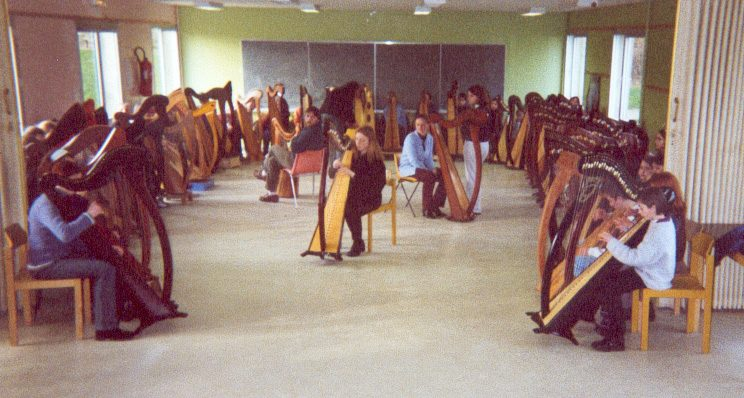

O’Bal Duo soutient l'association Telenn Noz pour la promotion de la harpe à danser.
Notre association : Telenn Noz
Cette association, loi 1901, créée le 21 juin 2001 a pour but d'enrichir en Bretagne, le répertoire pour la harpe celtique, par son collectage, sa création, sa diffusion et sa transmission.

Collecter et Créer :
Collecter divers airs, les transcrire et les adapter, les arranger pour la harpe celtique.
Diffuser et Transmettre :
Assurer la diffusion en animation, fest-noz - bal folk ou concert de ce répertoire, par l’intermédiaire des musiciens d’O’Bal Duo
Nous contacter :
Le siège social est situé chez Gaëlle Lavarec à Plogastel Saint Germain.
E-mail : gaelle.lavarec@gmail.com